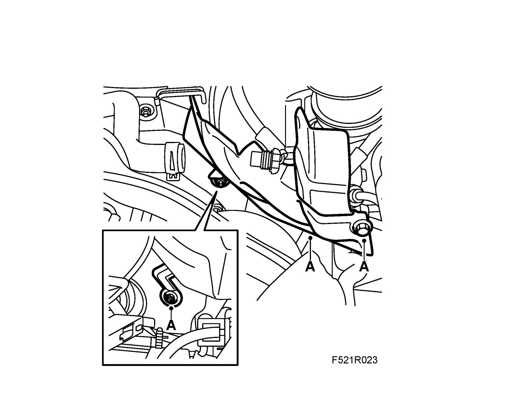
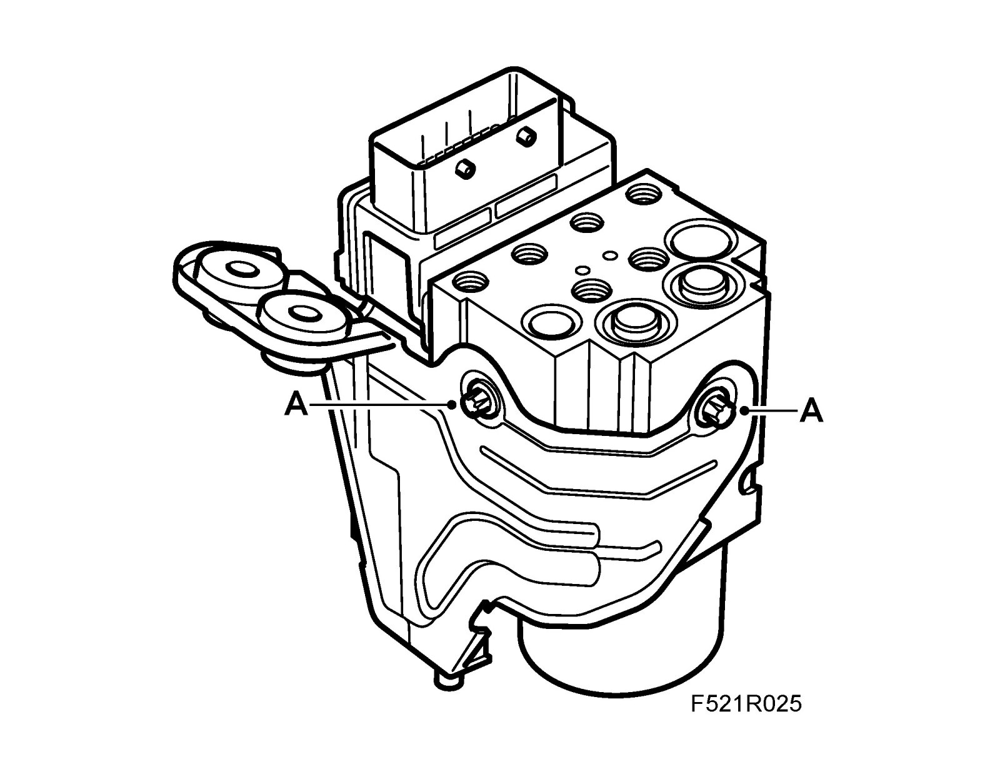
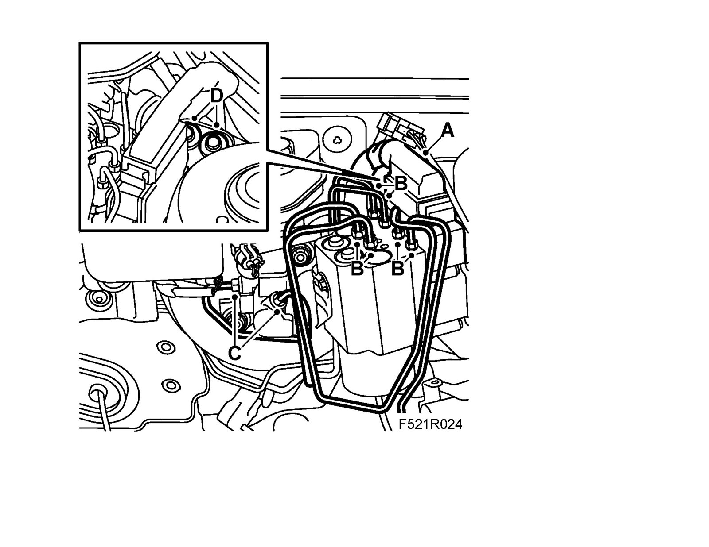

Hydraulic Unit, TCS/ESP, Bracket
Hydraulic unit, TCS/ESP, bracketImportant
ESD-SENSITIVE COMPONENT
Earth yourself by touching the car body before plugging in / unplugging components. Do not touch the component pins. Read Before removing a control module before changing a control module.
Important
Scrupulous cleanliness must always be observed during all work with hydraulic components.
To remove
1. Put on 82 93 706 Wing cover.
2. Drain the brake system, see Changing the brake fluid.
3. Remove the battery and lower part of battery cover.
4. B284 LHD: Remove the brake servo heat shield (A).

5. Unplug the connector (A) from the control module.
Important
Take care when releasing the locking mechanism on the connector so as not to damage the connector. Pull the halves straight apart to avoid bending the pins. For further information regarding connectors, refer to Connectors, handling and inspection.

6. Remove the brake pipes (B) from the unit.
7. B284 LHD: Remove the brake pipes (C) from the master cylinder.
8. Remove the bracket (D) from the spring strut tower.
9. Lift up the unit.
10. Remove the bracket (A) from the unit.

To fit
1. Fit the bracket (A) onto the unit.
Tightening torque: 10 Nm (7.5 lbf ft)

2. Put the unit in place with guide pin in the rubber bushing.
3. Fit the bracket (D) for the spring strut tower.
Tightening torque 25 Nm (18 lbf ft)

4. Attach the brake pipes (B) to the unit.
5. B284 LHD: Fit the brake pipes (C) for the master cylinder.
6. Plug in the connector (A) for the control module.
7. B284 LHD: Fit the brake servo heat shield (A).

8. Fit the lower part of the battery cover and the battery.
9. Fill with servo fluid, as specified.
Important
The EHPS system must not be run dry. Do not reuse drained fluid. Fill the hydraulic system with special fluid.
10. Bleed the brake system.
11. Carry out Procedure after disconnecting the battery.
12. Remove the wing cover.